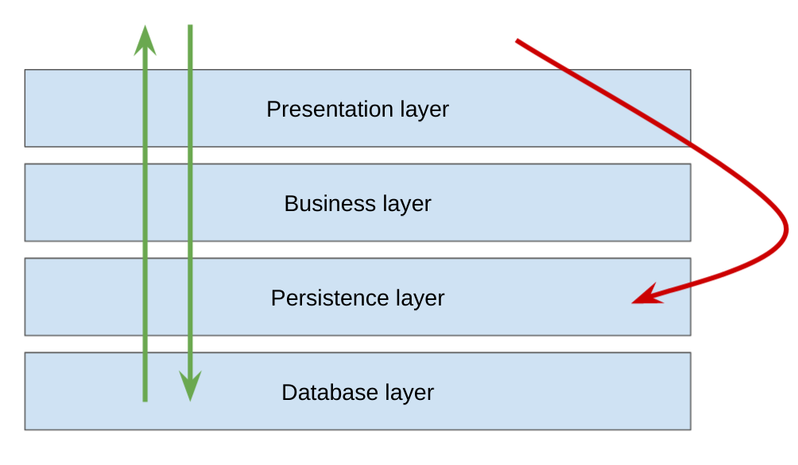
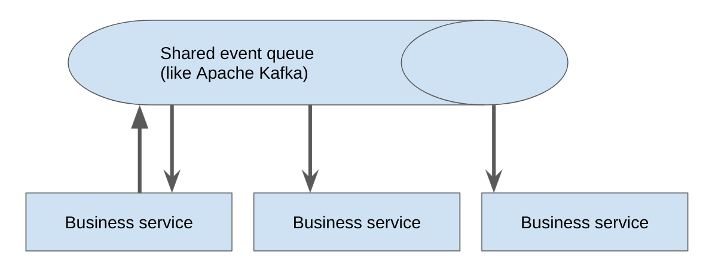
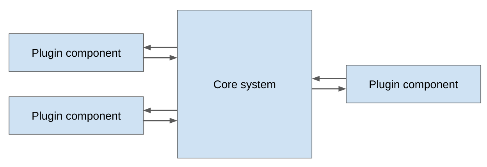

- Layered
- Event driven
- Microkernel
- Microservices
Layered architecture

The layered architecture pattern is a solid general-purpose pattern,
making it a good starting point for most applications, particularly
when you are not sure what architecture pattern is best suited for
your application. However, there are a couple of things to consider
from an architecture standpoint when choosing this pattern.
// Software Architecture Patterns, Mark Richards
Pos
- Easy to implement (in monolith style)
- Easy to test
Cons
- Low performance (each layer is just abstraction)
- Hard to scale (in monolith use will replicate large app)
- Low overall agility (hard to add new requirements, new dependencies)
Event driven architecture

The event-driven architecture pattern is a relatively complex pattern
to implement, primarily due to its asynchronous distributed nature.
When implementing this pattern, you must address various dis‐
tributed architecture issues, such as remote process availability, lack
of responsiveness, and broker reconnection logic in the event of a
broker or mediator failure.
// Software Architecture Patterns, Mark Richards
Pos
- High overall agility (easy to apply new requirements)
- Easy to deploy (minimum dependent code)
- High performance
- Easy to scale
Cons
- Hard to test (depends on external queue)
- Hard to develop (async nature)
Microkernel

One great thing about the microkernel architecture pattern is that it
can be embedded or used as part of another architecture pattern.
For example, if this pattern solves a particular problem you have
with a specific volatile area of the application, you might find that
you can’t implement the entire architecture using this pattern.
// Software Architecture Patterns, Mark Richards
Pos
- High overall agility
- Easy to deploy
- Easy to test
- Medium permanence (isolated components prevent deep stack trace)
Cons
- Hard to scale (look like service monolith)
- Hard to develop (large code base)
Microservices
Pos
- High overall agility
- Easy to deploy new service but hard to create infrastructure from scratch. Require extra costs of
infrastructure like Kubernetes.
- Easy to scale (small unit of work)
Cons
- Hard to test
- Low performance (a lot of remote calls throughout network)
- Hard to test dependencies (remote calls, async communication)